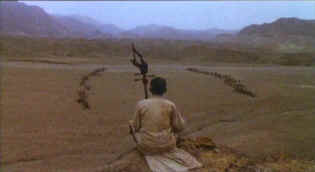

| Life on a String/ B+, D- |
| Kino/1991/107/WS 1.85 |
What a fabulous mystical opening in the
tradition of Chinese ghost stories. Life on a String is an extraordinarily spiritual film.
There are many beautiful scenes including a bookend pair at a rural road
stop, a magical place by a raging river. I wouldn't mind finding a spot like that
for noodles in New York. It's a
visual ode to joy when the young village girls encounter the two blind men.
 |
|
Peaceful spirit between two
armies. ©Kino
|
Old Master, a blind man of unusual spiritual power,
leads his blind apprentice Shitou on the road through rural China. Old
Master is frail and counts the days when the knots on his string will
restore his sight when Shitou will take his place.
Life on a String produces innocence on an
absolutely grand scope. Old Master sings in an other-worldly voice. The
power of his delivery produces a deep cavernous sound far more powerful than one would imagine from his frail stature. He
commands the stage as he entertains enraptured villagers by firelight. The
striking visual power of the power is balanced by fine characterizations.
The relationship between Old Master and Shitou is wonderful as is Shitou's
charming courtship of Lanxiu.
Chen Kaige makes Life on a String almost
with a painter's brush rather than a camera. The narrative style is very
different, like the light strains of a flute caught on the wind.
Cinematography by Changwei Gu captures the sweep of Kaige's vision with
majestic compositions as when Old
Master sits atop a mountain knoll like a king framed between two warring
clans as they square off against one another in battle. The mystery
is embellished by the fine score of Xiao-Song Qu.
Zhongyuan Liu is an other-worldly force as the
Old Master and Lei Huang is a wonderful innocent discovering the breadth
of life as Shitou. All the actors are most natural under Chen Kaige's
direction.
There are times when the composition looks almost as
if this could have been shot 2.35 and has been cropped, but I am probably
wrong. Very heavy grain and washed out color permeate
the transfer. Poor definition is the norm in this sad DVD rendering. Soft focus pretty much throughout.
Jitter is the rule here for any straight edge surfaces. This is bad enough
to look like it's sourced from 3/4 inch tape. The image is grossly
enhanced with lots of edge ringing in desperation to extract some measure
of sharpness fromt he source material. The
music is quite full with good range. In the end, the transfer must
be ignored. It's a shame that such a beautifully shot film should get such
shabby treatment on DVD.
|
|
|
|

Selections from the Feature
Archive include articles on
Akira Kurosawa, Blonde
Bimbos, Frank
Darabont, Steven
Culp, John
Herzfeld or Vietnam:
The Hollywood Pariah, and many more....
Hitchcock
on DVD

Information and review links to Alfred Hitchcock on DVD
Runaway
Train/B+,B

From an Akira Kurosawa screenplay. Jon Voight is fantastic as fierce
habitual criminal Oscar "Manny" Mannheim. A smile to
remember with ferocious non-stop action.

 Have
you visited Home
Theater Talk lately? One of the friendliest places on the Net
for Home Theater and DVD discussion, you can get help for installation
problems or simply share your opinions with other Vidiots. Have
you visited Home
Theater Talk lately? One of the friendliest places on the Net
for Home Theater and DVD discussion, you can get help for installation
problems or simply share your opinions with other Vidiots.

Images is a non-commercial Web site created for everyone who enjoys movies
and popular culture. Images is published quarterly; however, new reviews
will appear each week, so check back often.
 Lovers
of Hong Kong movies will relish
MC4's site that includes reviews and other information
about the Hong Kong movie scene. Lovers
of Hong Kong movies will relish
MC4's site that includes reviews and other information
about the Hong Kong movie scene.
|